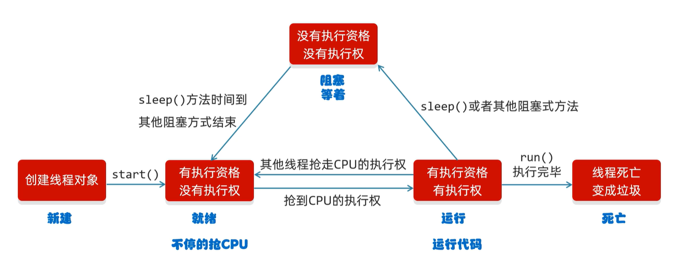
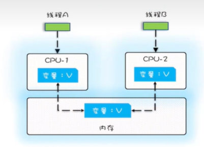
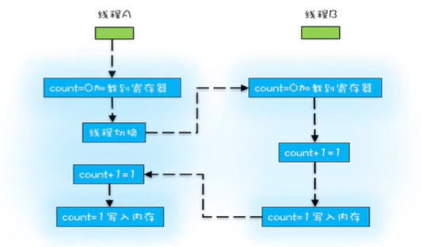
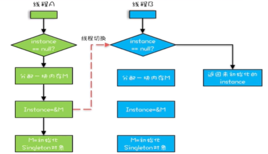
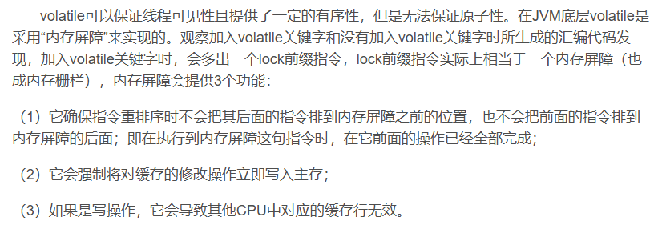
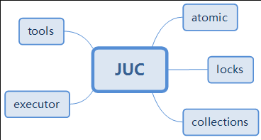

话说async就是异步，本来以为异步就是多线程，不过在中途学untiy的时候发现并不是一个东西，多线程只是异步的一种实现方式，平时提到异步更多的是说另一种方式协程。
详见
基本概念
进程&线程
进程：程序的基本执行实体
线程：操作系统能够进行运算调度的最小单位，它被包含在进程之中，是进程中的实际运作单位。
java默认有几个线程? 两个 main线程 gc线程
多线程的应用场景
- 拷贝、迁移大文件
- 加载大量的资源文件
并发和并行
并发：在同一时刻，有多个指令在单个CPU上交替执行
并行：在同一时刻，有多个指令在多个CPU上同时执行多线程的实现方式
继承Thread类的方式进行实现
不需要通过thread实例运行，但是你不能再继承别的类1
2
3
4
5
6
7
8
9
10
11
12
13
14
15
16
17
18
19
20
21
22
23public class MultithreadThing extends Thread{
public static void main (String[] args){
MultithreadThing myThing = new MultithreadThing(1);
MultithreadThing myThing2 = new MultithreadThing(2);
myThing.strat();
myThing2.strat();
}
private int threadNumber;
public MultithreadThing(int threadNumber){
this.threadNumber=threadNumber;
}
public void run(){
for (int i=1;i<=5;i++){
System.out.println(i+"from thread"+ threadNumber);
try{
Thread.sleep(1000);
}catch(InterruptedException e){
}
}
}
}
实现Runnable接口的方式进行实现
1 | public class MultithreadThing implements Runnable{ |
.getName()是Thread类里的方法，当使用方法二时，必须先获取当前线程的对象再使用，或者还是自定义带参构造器
.setName(“name”)是定义Thread类线程名字的方法myThread.isAlive() return true/false
利用Callable接口和Future接口方式实现
特点：可以获取到多线程运行的结果1
2
3
4
5
6
7public class MyCallable implements Callable<Integer>{
//integer是返回结果的类型
public Integer call() throws Exception{
return 114514;
}
}1
2
3
4
5
6
7
8
9
10
11public class ThreadDemo{
public static void main(String[] args){
MyCallable mc = new MyCallable();//多线程要执行的任务
FutureTask<Integer> ft = new FutureTask<>(mc);//作用管理多线程运行的结果
Thread t1 = new Thread(ft);
t1.start();
//获取多线程运行的结果
Integer result = ft.get();
System.out.println(result);
}
}
| | 优点 | 缺点 | |
| :———————- | :—————————————————————- | :————————————————————- | :—————- |
| 继承Thread类 | 编程比较简单，可以直接使用Thread类中的方法 | 可拓展性较差，不能再继承其他的类 | 不能得到结果 |
| 实现Runnable接口 | 扩展性强，实现该接口的同时还可以继承其他的类 | 编程相对复杂，不能直接使用Thread类中的方法 | 不能得到结果 |
| 实现Callable接口 | 同上 | 同上 | 可以得到结果 |
常见的成员方法
String getName() 返回此线程的名字void setName(String name) 设置线程的名字（构造方法也可以设置名字，即实例化时调用thread类那个有参构造器）默认Thread-xstatic Thread currentThread() 获取当前线程的对象
当JVM虚拟机启动之后，会自动启动多条线程，其中一条main线程的作用是去调用main方法执行代码static void sleep(long time) 让线程休眠指定的时间，单位为毫秒，哪条线程执行到这里就会在这里停留(1s=1000ms)setPriority(int newPriority) 设置线程的优先级 优先级只是一个概率final int getPriority() 获取线程的优先级final void setDaemon(boolean on) 设置为守护线程
当非守护线程执行完毕之后，守护线程会陆续结束
e.g.关闭qq聊天窗，传输线程也结束public static void yield() 出让线程/礼让线程
让出当前cpu执行权public static void join() 插入线程/插队线程
把这个线程插入到当前线程之前
线程的生命周期

线程的状态
新建状态(NEW)———————>创建线程对象
就绪状态(RUNNABLE)————->start方法
阻塞状态(BLOCKED)—————>无法获得锁对象
等待状态(WAITING)—————>wait方法
计时等待(TIMED_WAITING)——>sleep方法
结束状态(TERMINATED)———->全部代码运行完毕
运行后直接交给cpu 没有运行状态
wait/sleep的区别：
- 来自不同的类： wait来自object类, sleep来自线程类
- 关于锁的释放：wait会释放锁, sleep不会释放锁
- 使用的范围不同： wait必须在同步代码块中， sleep可以在任何地方睡眠
同步代码块
把操作共享数据的代码锁起来
synchronized(lock){
操作共享的代码
}
特点1:锁默认打开，有一个线程进去了，锁自动关闭
特点2:里买的呢代码全部执行完毕，线程出来，锁自动打开
1 | static int ticket = 0; |
同步方法
把synchronized关键字加到方法上
特点1:同步方法是锁住方法里的所有代码
特点2:锁对象不能自己指定
- 非静态:this
- 静态:当前类的字节码文件对象
1 | //技巧：同步代码块->方法 |
因为使用MyThread会创建多个实例，而Thread(MyRunnable)创建的多线程可’共用’一个MyRunnable实例。
所以，在MyThread中，synchronized锁是必须static的，
且若想把while中的代码块直接抽取成synchronized修饰方法也会导致锁失效，因为同步方法默认使用的锁是this(this指向MyThread的多个实例)，除非同时再加上static；
而在接口实现的Thread(MyRunnable)中反而可以不使用static修饰synchronized锁，
或者while中的代码块直接抽取成非static的synchronized修饰方法也没问题(this指向的MyRunnable唯一实例)。
Lock
1 | import java.util.concurrent.locks.Lock; |
死锁
不要让两个锁嵌套起来
synchronized和lock锁的区别
- synchronized内置的java关键字,Lock是一个java类
- synchronized无法判断获取锁的状态, Lock可以判断是否获取到了锁
- synchronized会自动释放锁,Lock必须要手动释放锁!如果不是释放锁,会产生死锁
- synchronized 线程1(获得锁,阻塞),线程2(等待); Lock锁就不一定会等待下去
- synchronized 可重入锁,不可以中断的,非公平的; Lock锁,可重入的,可以判断锁,非公平(可自己设置);
- synchronized 适合锁少量的代码同步问题,Lock 适合锁大量的同步代码
生产者和消费者(等待唤醒机制)
一个经典的多线程协作模式1
2
3
4
5
6
7
8
9
10
11
12
13
14
15
16
17
18
19
20
21
22
23
24
25
26
27
28
29
30
31
32
33
34
35
36
37
38
39
40
41
42
43
44
45
46
47
48
49
50
51
52
53
54
55
56
57
58
59
60
61
62
63
64
65
66
67
68
69
70
71
72
73
74
75
76
77
78public class ThreadDemo {
public static void main(String[] args) {
Cook c = new Cook();
Foodie f = new Foodie();
c.setName("厨师");
f.setName("食客");
c.start();
f.start();
}
}
class Foodie extends Thread {
public void run() {
// 1.循环
// 2.同步代码块
// 3.判断共享数据是否到了末尾（到了
// 4.判断共享数据是否到了末尾（没到，执行逻辑
while (true) {
synchronized(Desk.lock){
if(Desk.count == 0 ){
break;
}else{
if(Desk.foodFlag == 0){
try {
Desk.lock.wait();
} catch (InterruptedException e) {
// TODO Auto-generated catch block
e.printStackTrace();
}//让当前线程和锁进行绑定//?
//Desk.lock.notifyAll();//唤醒这把锁绑定的所有线程
}else{
Desk.count--;
System.out.println("在吃,还剩"+Desk.count+"碗能吃");
Desk.lock.notifyAll();
Desk.foodFlag = 0;
}
}
}
}
}
}
class Cook extends Thread{
public void run() {
while(true){
synchronized(Desk.lock){
if(Desk.count == 0){
break;
}else{
if(Desk.foodFlag == 1){
try {
Desk.lock.wait();
} catch (InterruptedException e) {
e.printStackTrace();
}
}else{
System.err.println("做了饭");
Desk.foodFlag = 1;
Desk.lock.notifyAll();
}
}
}
}
}
}
class Desk {
//作用：控制生产者和消费者
public static int foodFlag = 0;
//总个数
public static int count = 10;
//锁对象
public static Object lock = new Object();
}
运行结果1
2
3
4
5
6
7
8
9
10
11
12
13
14
15
16
17
18
19
20
21
22做了饭
在吃,还剩9碗能吃
做了饭
在吃,还剩9碗能吃
做了饭
在吃,还剩8碗能吃
做了饭
在吃,还剩7碗能吃
做了饭
在吃,还剩6碗能吃
做了饭
在吃,还剩5碗能吃
做了饭
在吃,还剩4碗能吃
做了饭
在吃,还剩3碗能吃
做了饭
在吃,还剩2碗能吃
做了饭
在吃,还剩1碗能吃
做了饭
在吃,还剩0碗能吃
堵塞队列方式实现
1 |
|
ThreadLocal
ThreadLocal 并不是一个Thread，而是Thread的局部变量。
ThreadLocal为每个线程提供单独一份存储空间，具有线程隔离的效果，只有在线程内才能获取到对应的值，线程外则不能访问。
ThreadLocal 提供了线程本地的实例。它与普通变量的区别在于，每个使用该变量的线程都会初始化一个完全独立的实例副本。ThreadLocal 变量通常被private static修饰。当一个线程结束时，它所使用的所有 ThreadLocal 相对的实例副本都可被回收。
ThreadLocal常用方法：
- public void set(T value) 设置当前线程的线程局部变量的值
- public T get() 返回当前线程所对应的线程局部变量的值
- public void remove() 移除当前线程的线程局部变量
pagehelp的原理也是这个
线程池
似乎就是创建了一个线程工厂
- 创建线程池
- 提交任务
- 所有的任务执行完毕，关闭线程池
public static ExecutorService newCachedThreadPool() 创建一个没有上线的线程池public static ExecutorService newFixedThreadPool(int nThreads) 创建有上限的线程池
1 | import java.util.concurrent.ExecutorService; |
运行结果1
2
3
4
5
6
7
8
9
10
11
12
13
14
15
16
17
18
19
20
21
22
23
24
25
26
27
28
29
30
31
32
33
34
35
36
37
38
39
40
41
42
43
44pool-1-thread-3---0
pool-1-thread-3---1
pool-1-thread-2---0
pool-1-thread-3---2
pool-1-thread-3---3
pool-1-thread-2---1
pool-1-thread-2---2
pool-1-thread-2---3
pool-1-thread-3---4
pool-1-thread-1---0
pool-1-thread-2---4
pool-1-thread-2---5
pool-1-thread-3---5
pool-1-thread-1---1
pool-1-thread-2---6
pool-1-thread-2---7
pool-1-thread-3---6
pool-1-thread-1---2
pool-1-thread-2---8
pool-1-thread-3---7
pool-1-thread-3---8
pool-1-thread-1---3
pool-1-thread-2---9
pool-1-thread-3---9
pool-1-thread-1---4
pool-1-thread-1---5
pool-1-thread-2---10
pool-1-thread-3---10
pool-1-thread-1---6
pool-1-thread-2---0
pool-1-thread-1---7
pool-1-thread-2---1
pool-1-thread-2---2
pool-1-thread-1---8
pool-1-thread-1---9
pool-1-thread-1---10
pool-1-thread-2---3
pool-1-thread-2---4
pool-1-thread-2---5
pool-1-thread-2---6
pool-1-thread-2---7
pool-1-thread-2---8
pool-1-thread-2---9
pool-1-thread-2---10
核心原理：
- 创建一个池子，池子中是空的
- 提交任务时，池子会创建新的线程对象，任务执行完毕，线程归还给池子，下次再次提交任务时，不需要创建新的线程，直接复用已有的线程
- 但是如果提交任务时，池子中没有空闲线程，也无法创建新线程，任务就会排队等待
自定义线程池
1 | /* |
线程安全
可见性
一个线程对共享变量的修改另一个线程能马上看到
多个线程在不同的cpu上执行时，操作的是不同的cpu缓存

当线程A在CPU-1对变量v的操作，对线程B是不可见的
（所以单核不存在可见性问题）1
2
3
4
5
6
7
8
9
10
11
12
13
14
15
16
17
18
19
20
21
22
23
24
25
26
27
28
29
30
31
32
33
34
35
36
37public class test1 {
private long count = 0;
private void add10K() {
int idx = 0;
while (idx++ < 10000) {
count += 1;
}
}
public static long calc() {
final test1 test = new test1();
Thread th1 = new Thread(() -> {
test.add10K();
});
Thread th2 = new Thread(() -> {
test.add10K();
});
th1.start();
th2.start();
try {
th1.join();
} catch (InterruptedException e) {
e.printStackTrace();
}
try {
th2.join();
} catch (InterruptedException e) {
e.printStackTrace();
}
return test.count;
}
public static void main(String[] args) {
System.out.println(calc());
}
}
运行结果(10000~20000)1
13017
解决办法：
- 加锁
- volatile
原子性
一个或者多个操作在cpu执行中不被中断的特性
cpu只能保证cpu指令级别的才是原子性的

解决办法：
加锁
有序性
new操作步骤：
- 分配内存M
- 在内存M上初始化对象
- M的地址->instance
但是编译器为了优化性能经常会把23两个步骤交换顺序1
2
3
4
5
6
7
8
9
10
11
12
13
14public class Singleton {
static Singleton instance;
static Singleton getInstance() {
if (instance == null) {
synchronized (Singleton.class) {
if (instance == null)
instance = new Singleton();
}
}
return instance;
}
}
在上面这个实例中M还没有初始化Sinleton对象
但是instance已经被赋了M的地址
此时线程B进入instance已经不为null
于是直接返回了未初始化的instance

解决办法：
- 加锁
- volatile
volatile
volatile 修饰的成员变量在每次被线程访问时，都强制从共享内存中重新读取该成员变量的值。而且，当成员变量发生变化时，会强制线程将变化值回写到共享内存。这样在任何时刻，两个不同的线程总是看到某个成员变量的同一个值。
一个 volatile 对象引用可能是 null。
volatile保证可见性，不保证原子性
Java volatile关键字最全总结：原理剖析与实例讲解(简单易懂)1
2
3
4
5
6
7
8
9
10
11
12
13
14
15
16
17
18
19
20
21
22
23
24
25public class test2 {
public volatile int inc = 0;
public void increase() {
inc++;
}
public static void main(String[] args) {
final test2 test = new test2();
for (int i = 0; i < 10; i++) {
new Thread() {
public void run() {
for (int j = 0; j < 1000; j++) {
test.increase();
}
};
}.start();
}
while (Thread.activeCount() > 1) {//保证前面的线程都做完
Thread.yield();
}
System.out.println(test.inc);
}
}
运行结果1
9690
int i =1 是原子操作吗？i++是原子操作吗？
一个线程操作完工作内存里的副本变量，会更新到主存中，在更新主存的过程中会进行加锁操作lock，此时如果另一个线程也想更新主存中的同一变量，就会自动失效本次操作，等上一线程更新完，再重新读取主存中的值。
因此，会有失效多次i++的情况，值就小于等于10000。
原理
“内存屏障”

synchronized和volatile
synchronized有序性->代码块和代码块之间 不保证代码块内部有序性
volatile有序性->指令级别的有序性
JUC
JUC是java.util.concurrent包的简称

- tools（工具类）
又叫信号量三组工具类，
包含 CountDownLatch（闭锁） CyclicBarrier（栅栏） Semaphore（信号量） - executor(执行者)
是Java里面线程池的顶级接口，但它只是一个执行线程的工具，真正的线程池接口是ExecutorService，
包含 ScheduledExecutorService ScheduledThreadPoolExecutor - atomic(原子性包)
是JDK提供的一组原子操作类
包含有AtomicBoolean、AtomicInteger、AtomicIntegerArray等原子变量类，
他们的实现原理大多是持有它们各自的对应的类型变量value，而且被volatile关键字修饰了。这样来保证每次一个线程要使用它都会拿到最新的值。 - locks（锁包）
是JDK提供的锁机制，相比synchronized关键字来进行同步锁，功能更加强大，它为锁提供了一个框架
包含 ReentrantLock ReentrantReadWriteLock (子类ReadLock和WriteLock) LockSupport - collections(集合类)
主要是提供线程安全的集合
ArrayList对应的高并发类是CopyOnWriteArrayList
HashSet对应的高并发类是 CopyOnWriteArraySet
HashMap对应的高并发类是ConcurrentHashMap等等
并发集合
Java 8并发集合：安全高效的多线程集合
ConcurrentHashMap和CopyOnWriteArrayList——并发Map和List
| 并发容器 | 对应的普通容器 | 描述 |
|---|---|---|
| ConcurrentHashMap | HashMap | Java 1.8 之前采用分段锁机制细化锁粒度，降低阻塞，从而提高并发性；Java 1.8 之后基于 CAS 实现。 |
| ConcurrentSkipListMap | SortedMap | 基于跳表实现的 |
| CopyOnWriteArrayList | ArrayList | |
| CopyOnWriteArraySet | Set | 基于 CopyOnWriteArrayList实现。 |
| ConcurrentSkipListSet | SortedSet | 基于 ConcurrentSkipListMap 实现。 |
| ConcurrentLinkedQueue | Queue | 线程安全的无界队列。底层采用单链表。支持 FIFO。 |
| ConcurrentLinkedDeque | Deque | 线程安全的无界双端队列。底层采用双向链表。支持 FIFO 和 FILO。 |
| ArrayBlockingQueue | Queue | 数组实现的阻塞队列。 |
| LinkedBlockingQueue | Queue | 链表实现的阻塞队列。 |
| LinkedBlockingDeque | Deque | 双向链表实现的双端阻塞队列。 |
原子类
java原子类详解
↑这个也太难读了
这一次，彻底搞懂Java并发包中的Atomic原子类
用我自己的话说：原子类中的方法使得i++等操作变成一个原子操作 原理是CAS算法
后话
1109 一个月断断续续学得差不多了 明明感觉一直在学实际上隔了挺久…
这个学期实在是忙！主要是中间跑去学unity了
不过在学c#的时候发现java后面没学的东西其实还不少
接下来复习一下git吧，正好要用了…
在此之前，发现了好东西